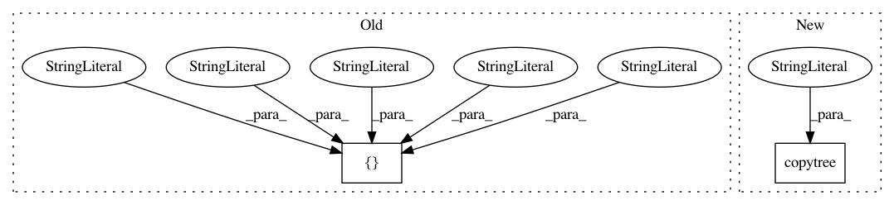

0d84fb50da7197537a042b3d86eb1a14a2cc8acf,tests/test_csv_to_features.py,,test_CSVToFeatures_dir,#,46
Before Change
sys.argv = ["pcap_to_csv.py", "-e", "tshark", "-o", os.path.join(tmpdir, "foo2"), "./tests"]
instance = PCAPToCSV()
instance.main()
sys.argv = ["csv_to_features.py", "-t", "2", "-c", "-g", "tshark", os.path.join(tmpdir, "foo2")]
instance2 = CSVToFeatures()
instance2.main()
After Change
with tempfile.TemporaryDirectory() as tmpdir:
foo2 = os.path.join(tmpdir, "foo2")
testsdir = os.path.join(tmpdir, "tests")
shutil.copytree("./tests", testsdir)
sys.argv = ["pcap_to_csv.py", "-e", "tshark", "-o", foo2, testsdir]
instance = PCAPToCSV()
instance.main()
sys.argv = ["csv_to_features.py", "-t", "2", "-c", "-g", "tshark", foo2]
In pattern: SUPERPATTERN
Frequency: 3
Non-data size: 2
Instances
Project Name: CyberReboot/NetworkML
Commit Name: 0d84fb50da7197537a042b3d86eb1a14a2cc8acf
Time: 2020-03-11
Author: josh@vandervecken.com
File Name: tests/test_csv_to_features.py
Class Name:
Method Name: test_CSVToFeatures_dir
Project Name: CyberReboot/NetworkML
Commit Name: d786789b626b2482b949a28c075cb6acb9bda926
Time: 2020-05-06
Author: josh@vandervecken.com
File Name: tests/test_csv_to_features.py
Class Name:
Method Name: test_CSVToFeatures_host
Project Name: CyberReboot/NetworkML
Commit Name: fb1ec3126774d4823d1bb2a95d7bcb0c134f7264
Time: 2020-04-19
Author: josh@vandervecken.com
File Name: tests/test_csv_to_features.py
Class Name:
Method Name: test_CSVToFeatures